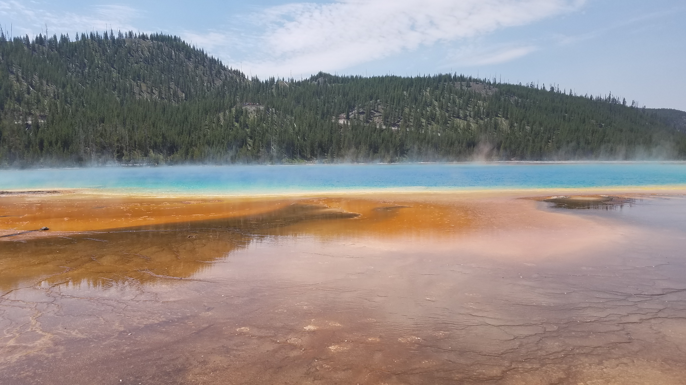
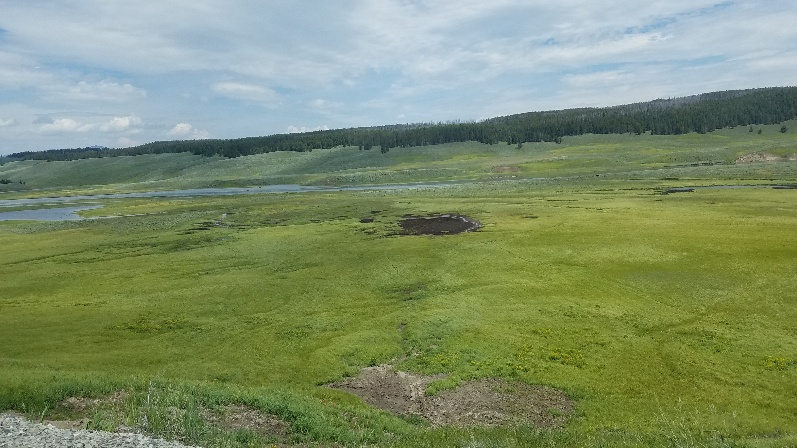

A vacation to Yellowstone National Park offers unforgettable views of geysers, waterfalls, wildlife, and breathtaking mountain scenery.
I visited this amazing landscape in 2018 and was in awe of the great diversity that this park has.
I'd recommend visiting this park to anyone that is able to do so, I personally can't wait to go back.
Rainbow Lake is a peaceful destination surrounded by forests and mountain scenery, offering visitors a quiet escape from the busier attractions in Yellowstone National Park. The calm water reflects the surrounding landscape, making it a popular location for photography and nature observation. During the summer months, the area provides excellent opportunities for hiking and wildlife viewing.
Figure 1. Rainbow Lake, Yellowstone National Park.
Photograph by Robert Brenckman, July 2018.


The meadows surrounding Grant Village showcase Yellowstone's diverse ecosystem with open grasslands bordered by evergreen forests. These areas frequently attract grazing wildlife such as bison and elk, providing visitors with memorable viewing opportunities while highlighting the park's natural beauty. The scenery changes throughout the day as sunlight and weather create dramatically different landscapes.
Figure 2. Meadow near Grant Village, Yellowstone
National Park.
Photograph by Robert Brenckman, July 2018.